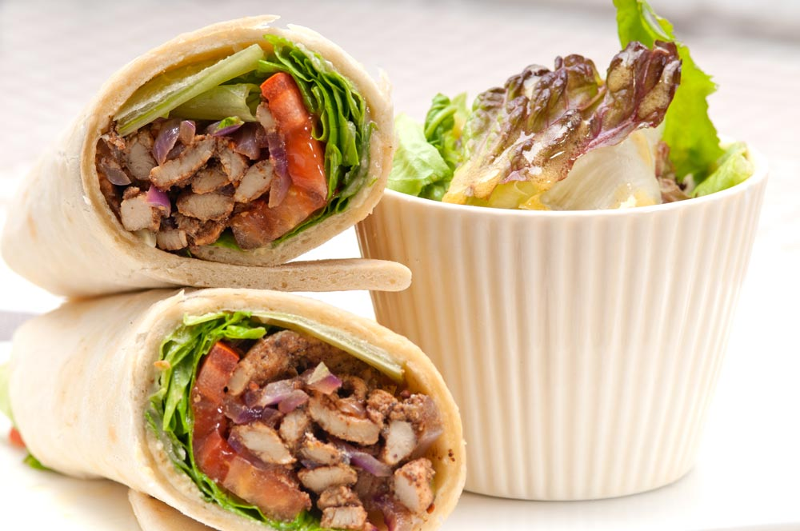

Nuestras mejores recetas
Hummus

Tiempo preparacion
- Preparacion ingredientes: 5min
- Procesar ingredientes: 5min
- Ajusted y servir 2-3 min
- Tiempo total 12-15min
Shawarma

Tiempo preparacion
- Preparacion ingredientes: 10 min
- Procesar ingredientes: 20-30 min
- Acompañamientos 10-15 min
- Tiempo total 40-55 min
Babaganoush

Tiempo preparacion
- Asar la berenjena: 30-40 min
- Dejar enfriar la berenjena: 10-15 min
- Preparar y mezclar los ingredientes: 10 min
- Ajustes y servir: 5 min
- Tiempo total: Aproximadamente 55-70 min
Kibbeh

Tiempo preparacion
- Remojar el bulgur: 20-30 min
- Preparar la mezcla: 15-20 min
- Formar las croquetas: 20-30 min
- Cocción (freír, hornear o asar): 20-25 min
- Tiempo total: 75min a 105min
Cuscus

Tiempo preparacion
- Hervir agua o caldo: 5 min
- Preparar el cuscús: 5 min
- Esponjar el cuscús y servir: 2-3 min
- Tiempo total: Aproximadamente 10-13 min
Tabule

Tiempo preparacion
- Remojar el bulgur: 20-30 min
- Preparar los ingredientes: 15-20 min
- Mezclar los ingredientes: 5-10 min
- Tiempo total: Aproximadamente 40-60 min